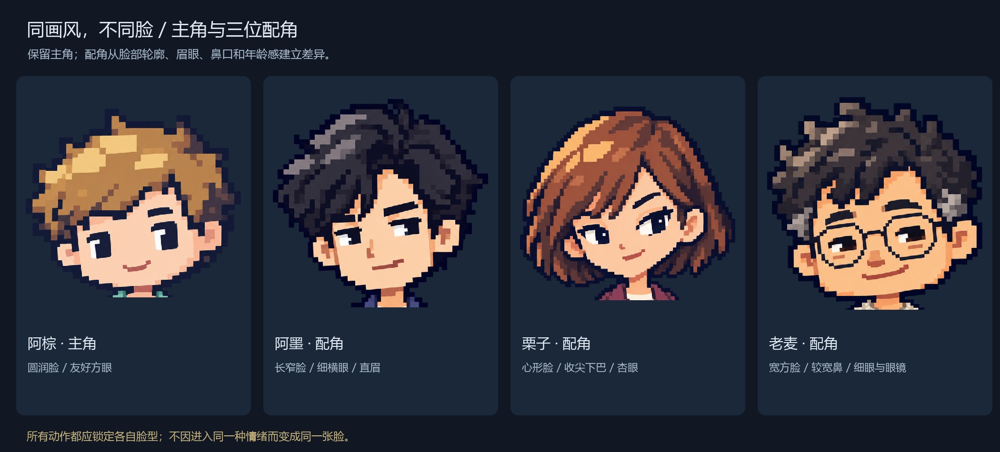
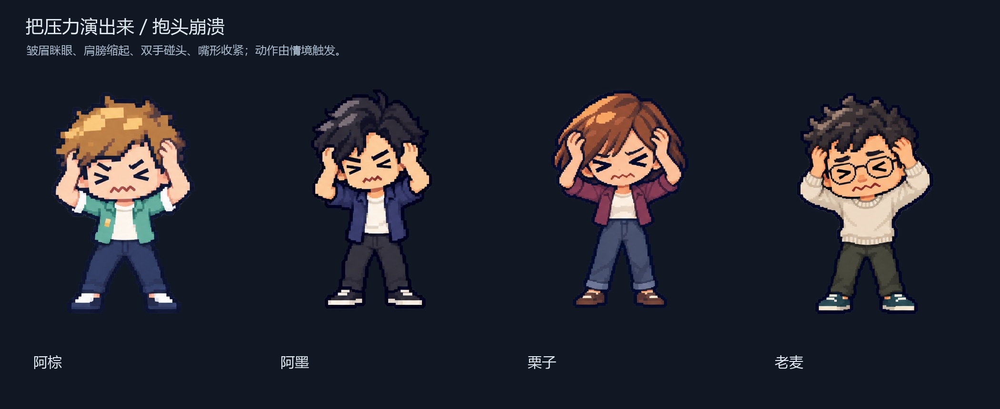

选人物 · 看人设
选动作 · 给 AI 参考
单张来自三列两行动作图的对应区域，保留原图像素与半透明光晕；这是姿态参考，不是已注册动画帧。左右摇是两个端点，口播是一个开口姿态，均需 AI 继续生成过程。
参考图里的情绪如何落到角色上

先看压力来源，再皱眉、眯眼、缩肩、双手触头。周围通知、任务或错误继续增加时，动作才有原因；恢复时也应有停顿与收束。动作不要求全片持续出现。
半身仿真人 · 只在具体人物成为主角的镜头使用
人物画像 / 身份介绍
身份卡、人物专题开场、有出处的观点引述、两种人物立场的对照。
历史人物 / 事件复刻
特定人物的关键工作片段、历史决策瞬间、档案式回溯。须另做身份匹配的画像。
人物核心的关键场景
取舍与决策、访谈对话、案例当事人的讲述、犹豫或压力转为理解的近景。
陈先生是虚构专题配角，可用于虚构案例与访谈；不是实际历史人物或专家。常规概念、流程关系和连续串讲仍优先像素人物，也可以不放人物。
素材状态与后续接入
本套可用作 AI 姿态和表演参考，尚未输出实际动画。生成稿有半透明光晕、柔化边缘及较多色阶，需像素清稿、基准帧注册、脸部坐标与脚底锚点适配后再做程序运行素材。预览按实际图像尺寸显示静态基准图；动作参考不等于骨骼或口型图集。